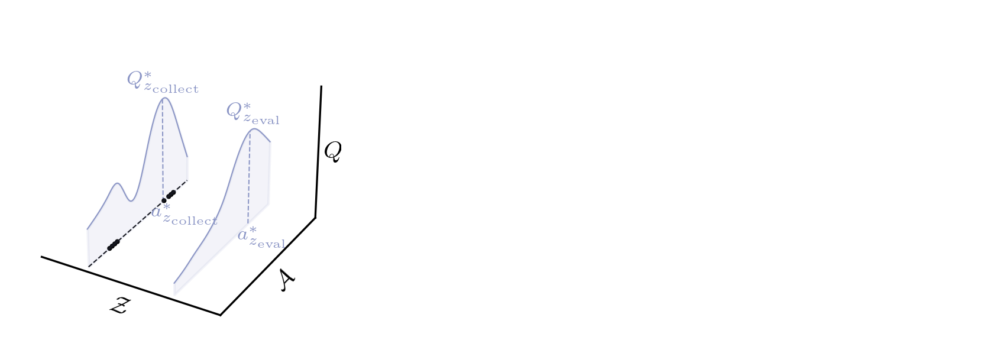

On Zero-Shot Reinforcement Learning
PhD Viva
University of Cambridge
Outline
- The Case for Zero-Shot RL
- Chapter 3: From Low Quality Data
- Chapter 4: Under Changed Dynamics
Outline
The Case for Zero-Shot RL
Chapter 3: From Low Quality Data
Chapter 4: Under Changed Dynamics
- Chapter 4: Under Partial Observability
- Chapter 5: With No Prior Data
- Outlook
The Case for RL
- Society faces problems, many of which can be cast as sequential decision-making problems:
- Engineering: energy generation control (fusion, fission, wind)- Education: teacher-student interaction- Mathematics: theorem-proving- Policy: climate negotiations- Science: forming hypotheses -> making predictions -> testing them- In such cases:
- System dynamics are rarely known (so standard control theoretic approaches can't be applied)- Data demonstrating the optimal policy is rarely available (so we can't imitate the optimal policy with supervised learning)- It is much easier to evaluate a solution that generate one (i.e. there exists a generator-verifier gap)- RL provides a generic framework for modelling sequential-decision making problems with these characteristics [1]
RL + Perfect Simulators + Compute = Superhuman

RL + Perfect Simulators + Compute = Superhuman
RL + Learned Simulators + Compute = Meh?
- In the absence of a perfect simulator, we can learn one from data
- In practice, this means collecting data from our problem’s environment, and building a model that simulates its dynamics
- But these models will only ever approximate the environment’s dynamics
- Finite data- Function approximation- So, a discrepancy between the dynamics modelled by learned simulators and the dynamics of the problem environment is inevitable
The Case for Zero-Shot RL
- Zero-shot RL methods aim to handle this discrepancy quickly
- Impressive progress has been made if the gap between the learned simulator and the real-world is small
- I contend that to solve real-world problems these methods need to deal with a larger gap and satisfy:

Chapter 3:
Zero-shot RL from Low Quality Data
Chapter 3: Zero-shot RL from Low Quality Data
Motivation
- The standard zero-shot RL methods, forward-backward representations (FB) [2] and universal successor features (USF) [3], provide principled mechanisms for performing zero-shot task generalisation
- However, they assume access to idealised (large & diverse) pre-training datasets that we can’t expect for real problems
- Can we pre-train zero-shot RL methods on realistic (small & narrow) datasets?
Chapter 3: Zero-shot RL from Low Quality Data
Failure mode: out-of-distribution value overestimation [4]
Chapter 3: Zero-shot RL from Low Quality Data
Failure mode: out-of-distribution value overestimation [4]
Chapter 3: Zero-shot RL from Low Quality Data
Failure mode: out-of-distribution value overestimation [4]
Chapter 3: Zero-shot RL from Low Quality Data
Conservative Zero-shot RL
Chapter 3: Zero-shot RL from Low Quality Data
Conservative Zero-shot RL

Chapter 3: Zero-shot RL from Low Quality Data
Conservative Zero-shot RL
Chapter 3: Zero-shot RL from Low Quality Data
Conservative Zero-shot RL
Chapter 3: Zero-shot RL from Low Quality Data
Conservative Zero-shot RL
Chapter 3: Zero-shot RL from Low Quality Data
ExORL Experiments
Baselines
- Zero-shot RL: FB [2], SF-LAP [6]
- Goal-conditioned RL: GC-IQL [7]
- Offline RL: CQL [5]
Datasets
Chapter 3: Zero-shot RL from Low Quality Data
ExORL Results
Chapter 3: Zero-shot RL from Low Quality Data
D4RL Results
Chapter 3: Zero-shot RL from Low Quality Data
Performance on Idealised Datasets is Unaffected
Chapter 3: Zero-shot RL from Low Quality Data
Conclusions
- Like standard offline RL methods, zero-shot RL methods suffer from the distribution shift
- As a resolution, we introduce conservative zero-shot RL methods
- Conservative zero-shot RL methods considerably outperform standard zero-shot RL methods on low-quality datasets
- Conservative zero-shot RL methods do not compromise performance on idealised datasets
Chapter 4:
Zero-shot RL under Partial Observability
Chapter 4: Zero-shot RL under Partial Observability
Motivation
- The standard zero-shot RL methods assume the assume the environment is fully observed.
- In many real-world problems the state is partially observed. Indeed, many other important problems in RL are naturally formulated as partially observed MDPs e.g. generalisation, temporal credit assignment etc.
- Can we pre-train zero-shot RL methods to perform well under partial observability?
Chapter 4: Zero-shot RL under Partial Observability
Failure mode: state and task mis-identification
Chapter 4: Zero-shot RL under Partial Observability
Memory-based Zero-shot RL methods
Chapter 4: Zero-shot RL under Partial Observability
ExORL Experiments
Baselines
- Zero-shot RL: FB [2], HILP [6], FB-stack
- Oracle: FB-MDP
Tests
- Standard POMDP: Noisey ExORL
- Generalisation: ExORL with dynamics interp./extrap.
Chapter 4: Zero-shot RL under Partial Observability
Standard POMDPs
Chapter 4: Zero-shot RL under Partial Observability
Generalisation
Chapter 4: Zero-shot RL under Partial Observability
Conclusions
- Real-world problems are often partially observed, yet zero-shot RL methods cannot handle partial observability out-of-the-box
- As a resolution, we introduce memory-based zero-shot RL methods
- Memory based zero-shot RL methods considerably outperform vanilla zero-shot RL methods on standard POMDPs, and show improved performance in the generalisation setting
Chapter 5: Zero-shot RL with No Prior Data
Chapter 5: Zero-shot RL with No Prior Data
Motivation
- For many real-world problems we have access to neither a simulator nor historical data logs.
- Emission-efficient building control is one such problem. But all prior works have assumed simulators or historical data logs are available.
- Can we learn to safely/efficiently control energy-intensive equipment in buildings online without any prior data?
Chapter 5: Zero-shot RL with No Prior Data
Low Emission Building Control

Chapter 5: Zero-shot RL with No Prior Data
Low Emission Building Control
Chapter 5: Zero-shot RL with No Prior Data
Failure Mode of Existing Methods: Data (In)efficiency
| Authors | Building | Algo | Efficiency | Data |
|---|---|---|---|---|
| Wei et al. (2017) [9] | 5-zone Building | DQN | ~35% | ~8 years |
| Zhang et al. (2019) [10] | Office | A3C | ~17% | ~30 years |
| Valladares et al. (2019) [11] | Classroom | DQN | 5% | ~10 years |
Chapter 5: Zero-shot RL with No Prior Data
PEARL: Probabilistic Emission Abating Reinforcement Learning
Chapter 5: Zero-shot RL with No Prior Data
Energym Experiments
Environments [15]
| Mixed-Use | Offices | Seminar Centre | |
|---|---|---|---|
| Location | Greece | Greece | Denmark |
| Floor Area (m\(^2\)) | 566 | 643 | 1278 |
| Action-space dim | \(\mathbb{R}^{12}\) | \(\mathbb{R}^{14}\) | \(\mathbb{R}^{18}\) |
| State-space dim | \(\mathbb{R}^{37}\) | \(\mathbb{R}^{56}\) | \(\mathbb{R}^{59}\) |
| Equipment | Thermostats & AHU Flowrates | Thermostats | Thermostats |
Baselines
- SAC [12]
- PPO [13]
- MPC-DNN [14]
- RBC (a generic controller)
Chapter 5: Zero-shot RL with No Prior Data
Energym Results
Chapter 5: Zero-shot RL with No Prior Data
System Identification
Chapter 5: Zero-shot RL with No Prior Data
Conclusions
- Standard deep RL methods are too data inefficient to be deployed for zero-shot building control
- We introduce PEARL, a method that can be deployed for zero-shot for building control
- PEARL outperforms the RBC in 1/3 environments and standard deep RL method in all environments
Conclusions
Conclusions
I set out to defend the following thesis:
- In Chapter 3, I took steps toward addressing the data quality constraint with conservative zero-shot RL methods
- In Chapter 4, I took steps toward addressing the observability constraint with memory-based zero-shot RL methods
- In Chapter 5, I took steps to addressing the data availability constraint (in the context of buidling control) with PEARL
Looking forward to the discussion!
References
[1] Sutton, R. and Barto, A. (2018). Reinforcement Learning: An Introduction. The MIT Press, second edition.
[2] Touati, A. and Ollivier, Y. (2021). Learning one representation to optimize all rewards. Advances in Neural Information Processing Systems, 34:13–23
[3] Borsa, D., Barreto, A., Quan, J., Mankowitz, D., Munos, R., Van Hasselt, H., Silver, D., and Schaul, T. (2018). Universal successor features approximators. arXiv preprint arXiv:1812.07626.
[4] Kumar, A., Fu, J., Soh, M., Tucker, G., and Levine, S. (2019). Stabilizing off-policy q-learning via bootstrapping error reduction. In Advances in Neural Information Processing Systems, volume 32
[5] Kumar, A., Zhou, A., Tucker, G., and Levine, S. (2020). Conservative q-learning for offline reinforcement learning. arXiv preprint arXiv:2006.04779.
[6] Touati, A., Rapin, J., and Ollivier, Y. (2023). Does zero-shot reinforce- ment learning exist? In The Eleventh International Conference on Learning Representations.
[7] Park, S., Ghosh, D., Eysenbach, B., and Levine, S. (2023). Hiql: Offline goal- conditioned rl with latent states as actions. Advances in Neural Information Processing Systems, 37.
[8] Park, S., Kreiman, T., and Levine, S. (2024). Foundation policies with hilbert representations. International Conference on Machine Learning.
[9] Wei, T., Wang, Y., and Zhu, Q. (2017). Deep reinforcement learning for building hvac control. In Proceedings of the 54th Annual Design Automation Conference 2017, DAC ’17, New York, NY, USA. Association for Computing Machinery.
[10] Zhang, Z., Chong, A., Pan, Y., Zhang, C., and Lam, K. P. (2019b). Whole building energy model for hvac optimal control: A practical framework based on deep reinforcement learning. Energy and Buildings, 199:472–490.
[11] Valladares, W., Galindo, M., Gutiérrez, J., Wu, W.-C., Liao, K.-K., Liao, J.-C., Lu, K.-C., and Wang, C.-C. (2019). Energy optimization associated with thermal comfort and indoor air control via a deep reinforcement learning algorithm. Building and Environment, 155:105 – 117.
[12] Haarnoja, T., Ha, S., Zhou, A., Tan, J., Tucker, G., and Levine, S. (2018a). Learning to walk via deep reinforcement learning. arXiv preprint arXiv:1812.11103.
[13] Schulman, J., Wolski, F., Dhariwal, P., Radford, A., and Klimov, O. (2017). Proximal policy optimization algorithms. arXiv preprint arXiv:1707.06347.
[14] Nagabandi, A., Kahn, G., Fearing, R. S., and Levine, S. (2018c). Neural network dynamics for model-based deep reinforcement learning with model- free fine-tuning. In 2018 IEEE International Conference on Robotics and Automation (ICRA), pages 7559–7566. IEEE.
[15] Scharnhorst, P., Schubnel, B., Fernández Bandera, C., Salom, J., Taddeo, P., Boegli, M., Gorecki, T., Stauffer, Y., Peppas, A., and Politi, C. (2021). Energym: A building model library for controller benchmarking. Applied Sciences, 11(8):3518.